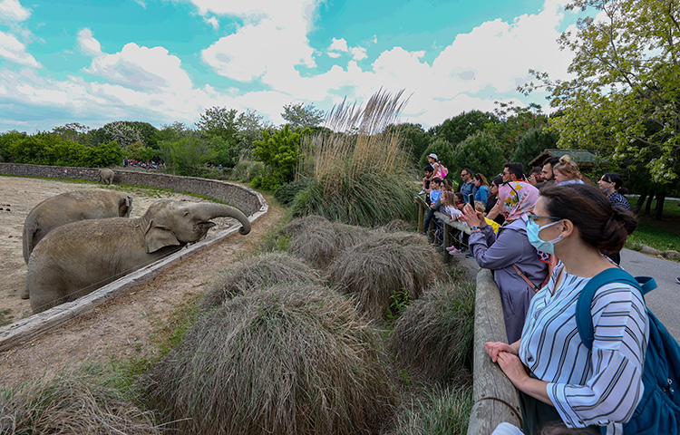
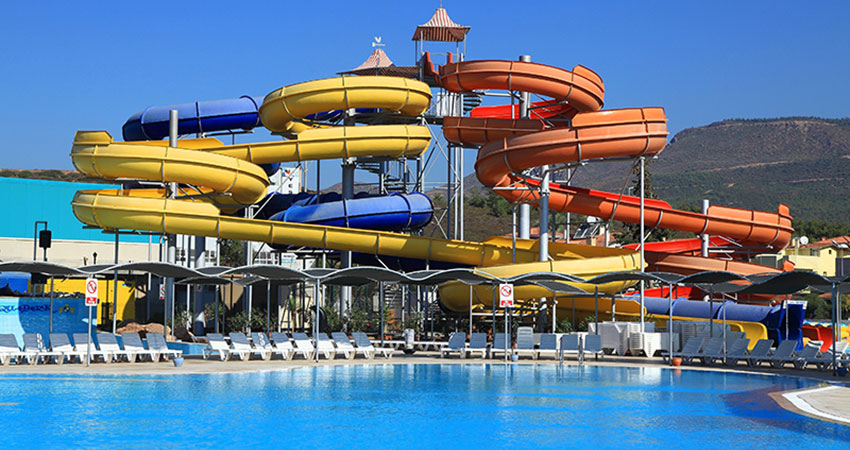
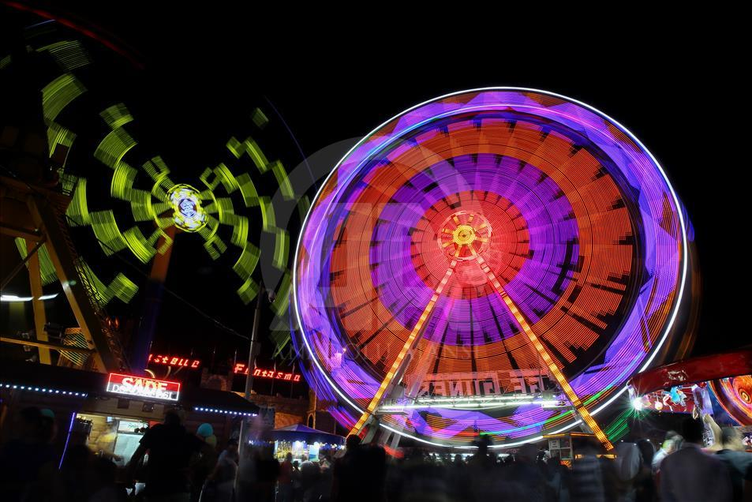
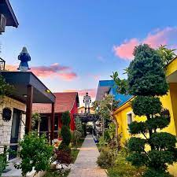
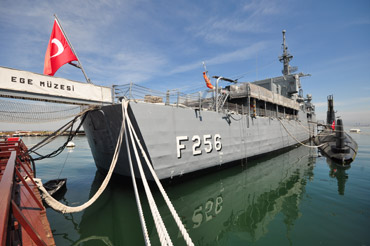

Çocuklar için eğitici ve eğlenceli bir doğa deneyimi sunan parkta yüzlerce hayvan türü doğal ortamlarında görülebilir.
Adres: Sasalı Mah., Çiğli/İzmir
Açık Günler: Her gün
Giriş: Tam: 20 TL – Öğrenci: 10 TL

Yaz sıcaklarında serinlemek isteyenler için mükemmel bir su parkı! Kaydıraklar, havuzlar ve çocuk oyun alanları mevcut.
Adres: Teleferik Mah., Balçova/İzmir
Açık Günler: Mayıs – Eylül arası her gün
Giriş: Ortalama 100-150 TL (yaşa göre değişebilir)

Dönme dolaptan çarpışan arabalara kadar birçok eğlence ünitesi bulunan lunapark, akşam gezileri için ideal.
Adres: Kültürpark, Lozan Kapısı, Alsancak/İzmir
Açık Günler: Her gün (Akşam saatleri)
Giriş: Jeton başı ücretlendirme

Çocuklar için masal okumaları, tiyatrolar ve yaratıcı drama atölyeleriyle dolu sıcak bir aile mekanı.
Adres: Bornova ve Karabağlar’da çeşitli şubeleri vardır
Açık Günler: Etkinliğe göre değişir
Giriş: Çoğu etkinlik ücretsiz veya düşük ücretli

Denizaltı ve gemi müzesi gezilebilir, ardından sahilde yürüyüş yapılabilir. Hem eğitici hem keyifli!
Adres: İnciraltı Mah., Balçova/İzmir
Açık Günler: Her gün
Giriş: Tam: 15 TL – Öğrenci: 5 TL